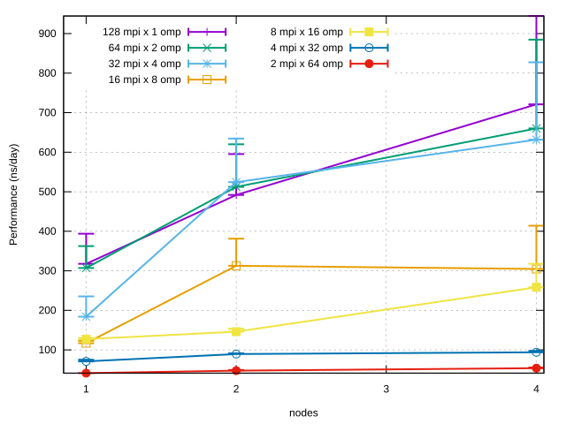
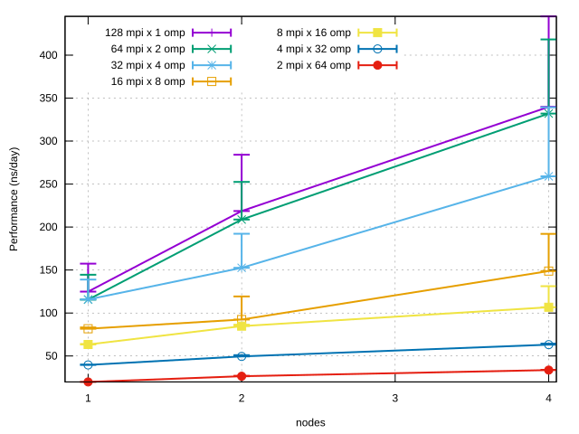
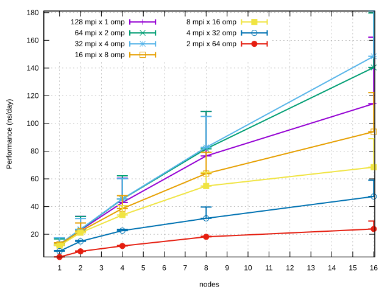
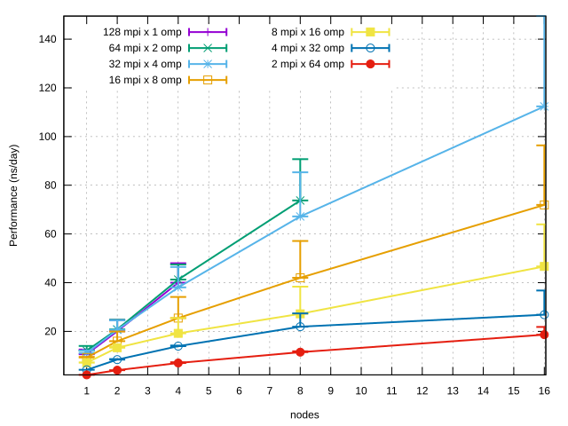
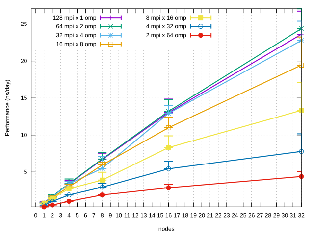
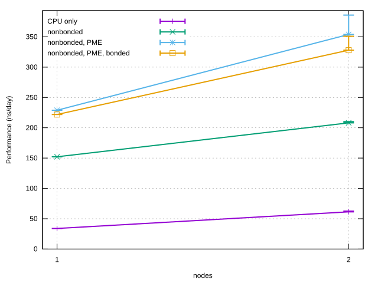
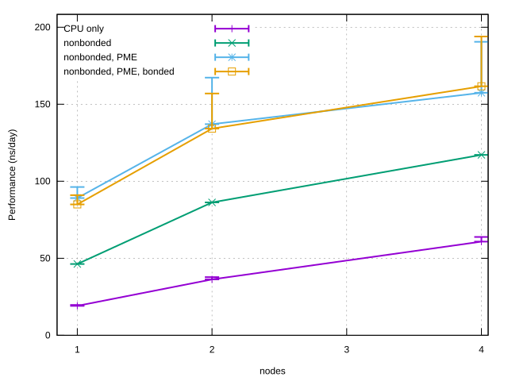
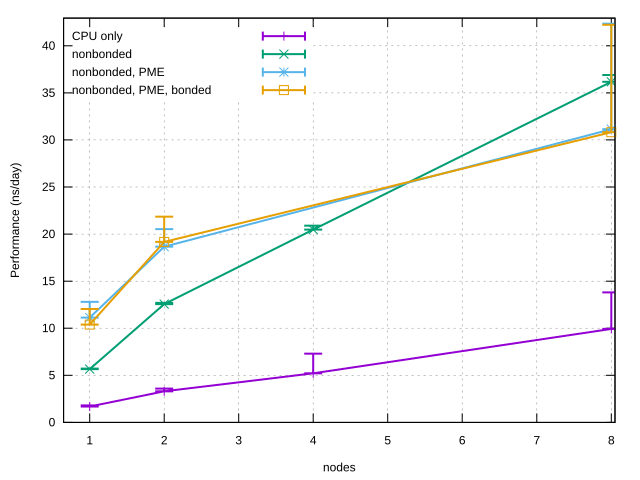
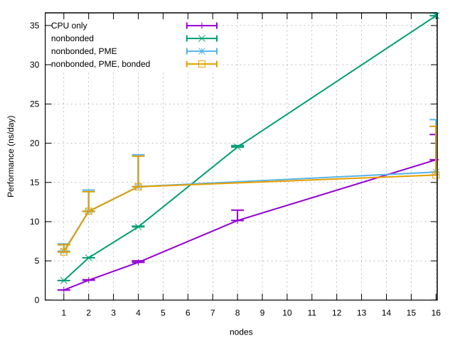
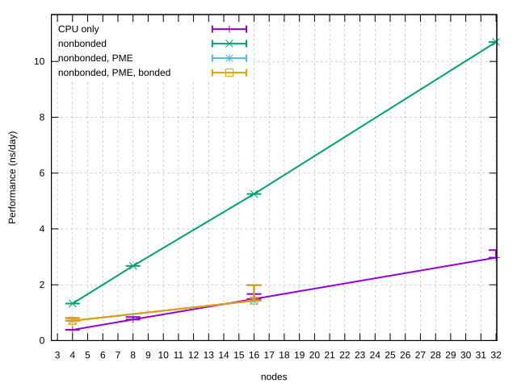

Performance Cookbook¶
The performance cookbook part of the GROMACS best practice guide
assumes your simulations are prepared appropriately and provides
concrete guidance on how best to run GROMACS simulations, i.e. execute
mdrun, so as to make good use of available hardware and obtain
results in the shortest time possible, be it on a laptop, a multi-GPU
desktop workstation, a departmental cluster, and especially on large
supercomputers. This complements and provides a bridge into navigating
the detailed information provided in the “getting good performance
from mdrun” page in the GROMACS manual:
http://manual.gromacs.org/current/user-guide/mdrun-performance.html
GROMACS can generally be launched without specifying anything other than the essential simulation parameters, as it has built-in heuristics that enable it to detect the underlying hardware and use accumulated insights about good performance embedded in the code to make usually reasonable choices given the available number and types of CPU cores and/or GPUs. By default GROMACS also adapts dynamically during execution to improve performance. However for any given simulation it is possible that better than default choices exist. Understanding how to control these by explicitly specifying parallel execution options and how best to approach obtaining optimal use of available hardware can make a significant difference to throughput and hence scientific results achieved over a given timespan, as well as to financial (cost) and environmental (energy usage) efficiency. For using high-performance computing resources there is additionally clear value in knowing what scale of resources (number of cores / nodes / GPUs) are efficient to use, or how to go about finding this out.
As well as general guidance applicable to whatever machine you may be running GROMACS on, the performance cookbook provides concrete examples showing how to obtain good performance on a number of specific PRACE (and in future EuroHPC) machines, both as an illustration of the application of general best practice process for obtaining good performance, and to promote efficient usage of the named machines. The cookbook also provides a reference set of (near) optimal benchmark performance results obtained on these machines using best practice in order to aid estimation of required compute time allocations for researchers requesting such time.
General guidance on running mdrun and strategy for getting good performance¶
Single node¶
When using GROMACS on a single node, that is to say a machine such as
a laptop, desktop workstation, or server, where all processor cores or
GPUs have access to a single shared memory, we typically run the
thread-mpi version of mdrun (gmx mdrun).
CPU only
Running GROMACS with the default of one thread-mpi rank per core on a
single-node CPU-only machine is often optimal, however one can
experiment with different combinations of numbers of thread-MPI ranks
(controlled by varying -ntmpi N) and numbers of OpenMP threads per
rank (controlled by varying -ntomp M and setting the environment
variable OMP_NUM_THREADS=M), such that M x N is equal to the
total number of CPU cores available on the node. Many processors
support simultaneous multithreading (SMT), known as hyperthreading on
Intel processors, whereby each physical core can efficiently execute
multiple threads or processes. Enabling multithreading may boost
performance. To make use of SMT, -ntmpi N and -ntomp M should
be chosen such that M x N equals the number of logical cores
identified by the operating systems, which is equal to the number of
physical processor cores multiplied by the number of simultaneous
multithreads supported by each physical core.
If executing on more than at least 12 ranks GROMACS by default
dedicates a certain fraction of the ranks to PME calculations. The
number of PME ranks is based on various heuristics that reflect what
the developers expect to be optimal based on the underlying algorithms
and what has often been found to give good performance. During
execution GROMACS attempts to reduce the load imbalance between PP and
PME ranks, unless this functionality is disabled by choosing
-tunepme no. Even when enabled however, this dynamic PME tuning
does not change the number of PME ranks from what GROMACS decides
according to its built-in heuristics. It is possible to explicitly
specify the number of PME ranks to use with the -npme option. You
should examine the md.log file produced and check if there is any
warning suggesting to try use a larger or smaller number of PME ranks
for your simulation. A more systematic way to determine a
performance-optimal number of PME ranks for a given total number of
ranks can be determined using the gmx tune_pme tool as described
in gmx tune_pme
For details, see Running mdrun within a single node and Process(-or) level parallelization via OpenMP
CPU + GPU
By default GROMACS launches one thread-mpi rank per GPU. It is worth
experimenting running with more thread-mpi ranks, up to one rank per
CPU core. Whatever the number of ranks, choose -ntomp to ensure
all available CPU cores are used, and apply similar considerations to
adjust -ntomp for hyperthreading/SMT-capable processors as
described above for CPU-only execution.
GPU offload options
By default GROMACS offloads short-range non-bonded force calculations
(-nb gpu), PME calculations (-pme gpu) and, on NVIDIA GPUs,
bonded force calculations (-bonded gpu). Currently (GROMACS 2020)
PME offload to GPU can only be done by a single rank (i.e. a single
GPU). PME offload is also subject to a number of further known
limitations.
It is worth experimenting with offload options taking into account the
performance considerations for GPU tasks
and considering your hardware, in particular the number and respective
age and computational power of your processor(s) and your GPU(s). For
example, FFTs are offloaded by default if PME is offloaded (which also
happens by default), but this can be avoided with -pmefft cpu and
may be beneficial for an older GPU sitting alongside newer CPU.
Constraint calculations and coordinate updates default to CPU but can
be offloaded with -update gpu, though only to NVIDIA GPUs, only if
GROMACS is executes on a single rank, and currently (GROMACS 2020)
subject to further limitations (no free-energy, no virtual sites, no
Ewald surface correction, no replica exchange, no constraint pulling,
no orientation restraints and no computational electrophysiology).
For details, see Running mdrun within a single node, Node level parallelization via GPU offloading and thread-MPI, and Running mdrun with GPUs
Multiple networked compute nodes in a cluster or supercomputer¶
In order to run GROMACS on a multi-node distributed-memory machine
such as a supercomputer we need to run the MPI-enabled version using
gmx_mpi mdrun (or simply mdrun_mpi), rather than gmx mdrun
(or simply mdrun). In addition, GROMACS should be launched with a
parallel application launcher (mpirun, mpiexec, srun, or
aprun), which sets the number of MPI ranks N:
mpirun -np N gmx_mpi mdrun <mdrun options>
CPU only
As for single-node simulations, running with 1 rank per core and 1 OpenMP thread per rank and therefore with as many MPI ranks per node as there are cores on each node is often optimal. It is however worth experimenting with multiple OpenMP threads per rank, especially as this often helps retain higher performance when scaling to more nodes.
Runs using multiple nodes are very likely to cause GROMACS to
automatically spawn dedicated PME ranks, for which you are advised to
follow the guidance already given above for the single node case. You
should be aware that if the number of PP ranks resulting from the
combined choice of total number of MPI ranks and number of PME ranks
has a largest prime divisor that GROMACS considers too large to give
good performance for the domain decomposition, it will throw a fatal
error and abort execution. In these cases it may be worth adjusting
the total number of ranks and/or the number of PME ranks to obtain
better performance, using OpenMP threading where necessary to ensure
all cores on each node are utilised, though it’s not inconceivable
that overall performance may be larger with an optimal choice of
number of PME ranks even if this leaves a small number of cores on
each node unused. As explained for the single-node case,
performance-optimal number of PME ranks for a given total number of
ranks can be determined in a systematic way using the gmx tune_pme
tool as described in gmx tune_pme
The OpenMP threading for PME ranks can be chosen to be different than
for standard (i.e. PP) ranks using the -ntomp_pme option,
providing added flexibility to help utilise all cores on each node.
CPU + GPU
Broadly the same considerations as for single-node use apply with regards to determining an optimal choice of number of MPI ranks x OpenMP threads and GPU offloading options. However currently (GROMACS 2020) offloading of coordinate updates and constraints is not possible when running on more than one node as this restricts GROMACS to run on a single rank and hence on a single node.
Offloading PME calculations to GPU can currently (GROMACS 2020) only
take place on a single rank using a single GPU. The performance
advantage this typically gives over CPU-based PME computation on a
single or small number of nodes can therefore start to diminish when
running on larger numbers of nodes thanks to the growing compute power
of an increasing number of PME ranks running on CPU cores. One
therefore expects a crossover point beyond which it is faster on a
given number of nodes to run multiple dedicated PME ranks - e.g. a
number chosen optimally using `tune_pme` - on CPU cores, instead
of offloading all PME calculations to a single GPU. The node count at
which this occurs will depend on factors such as the system size,
chosen MD parameters, and the relative performance of GPUs and CPUs
available in a machine.
Getting good GROMACS performance on PRACE/EuroHPC machines¶
This section provides guidance and concrete recipes showing how to build and run GROMACS for good performance on some of the largest EU-based supercomputers available to EU researchers through PRACE (and in future also EuroHPC).
General guidance for each machine is complemented by an analysis
illustrating the effect of key runtime execution choices on mdrun
performance for a range of benchmark simulations. Comparison between
these and your own simulations should help you determine how best to
run your own simulations on these machines and how to obtain good
performance.
Benchmarks¶
A brief description is provided below of the benchmarks used to illustrate how to obtain good performance on PRACE/EuroHPC machines for a range of system sizes and types.
Benchmarks prefixed with “bench” are available from the Dept. of Theoretical and Computational Biophysics at the MPI for biophysical Chemistry, Göttingen: https://www.mpibpc.mpg.de/grubmueller/bench
Benchmarks suffixed with “_HBS” are available from the UK’s HECBioSim consortium of computational biomolecular researchers: https://www.hecbiosim.ac.uk/benchmarks
- 20k_HBS:
3NIR Crambin
Total number of atoms: 19,605
Protein atoms: 642
Water atoms: 18,963
Input parameters: 20k_HBS.mdp
- benchMEM:
Protein in membrane, surrounded by water
Total number of atoms: 82k
Input parameters: benchMEM.mdp
- 465k_HBS:
hEGFR Dimer of 1IVO and 1NQL
Total number of atoms: 465,399
Protein atoms: 21,749
Lipid atoms: 134,268
Water atoms: 309,087
Ions: 295
Input parameters: 465k_HBS.mdp
- benchRIB:
Ribosome in water
Total number of atoms: 2M
Input parameters: benchRIB.mdp
- benchPEP:
Peptides in water
Total number of atoms: 12M
Input parameters: benchPEP.mdp
GROMACS performance on HAWK (HLRS, Germany)¶
https://www.hlrs.de/systems/hpe-apollo-hawk/
HAWK is currently (November 2020) listed as number 16 on the Top500, the 6th largest European HPC system, and is accessible through PRACE access mechanisms.
Hardware
Each node has:
Processors: 2 x 64-core AMD EPYC 7742 @2.25
Memory: 256GB RAM
Interconnect: InfiniBand HDR200
Software
Relevant software stack on system (available to all users via environment modules):
HPE MPT and OpenMPI MPI libraries
FFTW (Zen2 architecture-specific build)
Build
A multinode-capable MPI-enabled version of GROMACS with good performance on HAWK can be built as follows:
module load fftw
cd gromacs-2020.2
mkdir build
cd build
cmake .. -DCMAKE_INSTALL_PREFIX=${HOME}/gromacs/2020.2 -DCMAKE_C_COMPILER=mpicc -DCMAKE_CXX_COMPILER=mpicxx \
-DGMX_MPI=on -DGMX_SIMD=AVX2_256 -DGMX_GPU=off -DGMX_BUILD_SHARED_EXE=off -DBUILD_SHARED_LIBS=off \
-DGMX_FFT_LIBRARY=fftw3 -DCMAKE_PREFIX_PATH=${FFTW_ROOT}
make -j 64
make install
Run
The example job script below shows how to run GROMACS on HAWK for 1 hour on 8 nodes with 128 MPI ranks per node and 2 OpenMP threads per rank. Each physical core on the two 64-core AMD EPYC processors on HAWK supports two simultaneous multithreads (SMTs) - two logical cores - providing a total of 256 usable logical cores per node. The example launches a total of 256 threads across 128 ranks, implying that we intend to make use of all logical cores. The omplace -ht compact option should be used when running GROMACS using simultaneous multithreading as it ensures similarly numbered MPI ranks as well as OpenMP threads belonging to the same MPI rank are executed as close together in the processor’s and indeed the node’s memory hierarchy as possible - in the example, both OpenMP threads run on the same physical core. Not using the compact omplace option was found to be more likely to lead to lower performance when using SMT.
#!/bin/bash -l
#PBS -N benchRIB
#PBS -l select=8:mpiprocs=128:ompthreads=2
#PBS -l walltime=01:00:00
# Change to the directory that the job was submitted from
cd $PBS_O_WORKDIR
export OMP_NUM_THREADS=1
mpirun -np 1024 omplace -nt $OMP_NUM_THREADS -ht compact gmx_mpi mdrun -s benchRIB.tpr -ntomp $OMP_NUM_THREADS
MPI x OpenMP hybrid parallel execution and simultaneous multithreading
In order to better understand how GROMACS utilises the available
hardware on HAWK and how to get good performance we can examine the
effect on benchmark performance of the choice of the number of MPI
ranks per node and OpenMP thread and use of SMT for a given number of
HAWK nodes. Doing this systematically is facilitated in the first
instance by disabling dynamic load balancing (-dlb no) and PME
tuning (-tunepme no), which also allows us to illustrate the
strength of load imbalance in different execution scenarios.
The figures below show benchmark performance for GROMACS 2020.2 scales
with increasing node count on HAWK for different combinations of MPI
ranks and OpenMP threads per rank. Results using simultaneous
multithreading (SMT) are not shown as these follow similar trends but
broadly speaking yield slightly lower performance on HAWK for the
benchmarks examined, even with compact placement assigned using
omplace. Error bars (offset upward from measurements) indicate the
hypothetical maximum obtainable performance if the combined load
imbalances between spatial domains and between PP and PME ranks
reported by GROMACS were absent.
It is clear there is a very significant effect on performance of the choice of MPI x OpenMP hybrid decomposition. As a general rule on HAWK performance is better for fewer (typically 1, 2 or 4) OpenMP threads per MPI rank, and hence more MPI ranks per node. Using more than 1 (but no more than 4) OpenMP threads per rank may enable better performance to be achieved especially on larger number of nodes. OpenMP multithreading also allow runs on larger numbers of nodes to run without requiring care to avoid the fatal abortive error that results from a number of PP ranks that has too large a prime factor as largest divisor, simply by reducing the total number of MPI ranks.
 20k_HBS¶ |
 benchMEM¶ |
 465k_HBS¶ |
 benchRIB¶ |
 benchPEP¶ |
Tuning the number of PME ranks
As mentioned in the manual
the domain decomposition (DD) load balancing functionality, which is
enabled by default and disabled with -dlb no, is important for
achieving good performance for spatially heterogeneous
systems. However PME and DD load balancing can interfere with each
other. To improve on the unbalanced performance shown in above
benchmark figures therefore, a systematic approach can be taken by
separately tuning the number of PME for a given total number of ranks
using the gmx tune_pme tool as described in the section on
tune_pme
in the manual.
On HAWK, we could tune the number of PME ranks to improve the
performance of, for example, the benchRIB benchmark running on 16
nodes with 32 MPI ranks per node (512 ranks in total) and 4 OpenMP
threads per rank, which we saw in the above results is already a good
choice considering unbalanced performance and which has scope to
improve significantly through reduction of observed load imbalance.
The following script allows one to run tune_pme on HAWK to do this
and thereby determine an optimal choice for -npme:
#!/bin/bash -l
#PBS -N tunepme
#PBS -l select=16:mpiprocs=32:ompthreads=4
#PBS -l walltime=01:00:00
# Change to the directory that the job was submitted from
cd $PBS_O_WORKDIR
export OMP_NUM_THREADS=4
export PATH=$HOME/gromacs/2020.2/mpi/AVX2_256/bin:$PATH
gmx_mpi tune_pme -np 512 -mdrun "omplace -nt ${OMP_NUM_THREADS} gmx_mpi mdrun" -s benchRIB.tpr -ntomp $OMP_NUM_THREADS -dlb no
GROMACS performance on Piz Daint (CSCS, Switzerland)¶
Hardware
Focus on XC50 GPU partitition
Each node:
Processor: 1 x 12-core Intel Xeon E5-2690 v3 @ 2.60GHz (one socket)
Memory: 64GB RAM
GPU: 1 x NVidia P100
CRAY Aries interconnect
Software
Relevant software stack on system (available to all users via environment modules):
Cray MPICH MPI library
Cray-optimised FFTW
Cray-libsci provides BLAS & LAPACK
craype-accel-nvidia60 targets the correct SM architecture to compile for the P100 GPU
Build
Build instructions Piz Daint’s XC50 GPU partition:
module load daint-gpu
module swap PrgEnv-cray PrgEnv-gnu
module load cray-fftw
module load craype-accel-nvidia60
cd gromacs-2020.2
mkdir build
cd build
cmake .. -DCMAKE_INSTALL_PREFIX=${HOME}/gromacs/2020.2 -DCMAKE_C_COMPILER=cc -DCMAKE_CXX_COMPILER=CC \
-DGMX_MPI=on -DGMX_GPU=on -DGMX_SIMD=AVX2_256 -DGMX_FFT_LIBRARY=fftw3 -DGMX_HWLOC=on
make -j 12
make install
Run
Example job script to run mdrun on Piz Daint’s XC50 GPU partition for 1 hour on 4 nodes, with 1 MPI rank per node and 12 OpenMP threads per rank, without hyperthreading
#!/bin/bash -l
#SBATCH --job-name=benchmark
#SBATCH --time=01:00:00
#SBATCH --nodes=1
#SBATCH --ntasks-per-node=1
#SBATCH --cpus-per-task=12
#SBATCH --ntasks-per-core=1 # 1 = no hyperthreading, 2 = with hyperthreading
#SBATCH --hint=nomultithread # nomultithread = no hyperthreading, multithread = hyperthreading
#SBATCH --partition=normal
#SBATCH --constraint=gpu
module swap PrgEnv-cray PrgEnv-gnu
module load daint-gpu
module load cray-fftw
module load craype-accel-nvidia60
export OMP_NUM_THREADS=$SLURM_CPUS_PER_TASK
export CRAY_CUDA_MPS=1
export PATH=${HOME}/gromacs/2020.2/bin:$PATH
srun gmx_mpi mdrun -s benchmark.tpr -ntomp ${OMP_NUM_THREADS}
GPU offload scenarios, hybrid MPI x OpenMP hybrid parallel execution and simultaneous multithreading
In order to better understand how GROMACS utilises the available
hardware on Piz Daint and how to get good performance we can examine
the effect on benchmark performance of the choice of which
calculations to offload to GPU, the number of MPI ranks per node and
OpenMP threads per rank, and use of simultaneous multithreading. Doing
this systematically is facilitated in the first instance by disabling
dynamic load balancing (-dlb no) and PME tuning (-tunepme no),
which also allows us to illustrate the strength of load imbalance in
different execution scenarios.
The figures below show benchmark performance for GROMACS 2020.2 scales with increasing node count on Piz Daint for different combinations of GPU offload scenarios and for different combinations of MPI ranks and OpenMP threads, and with and without use of multithreading (SMT). Only the most relevant, i.e. some of the best-performing execution scenarios are shown for each benchmark. Error bars (offset upward from measurements) indicate the hypothetical maximum obtainable performance if the combined load imbalances between spatial domains and between PP and PME ranks reported by GROMACS were absent. Offloading of coordinate updating is not included as this is only relevant for single node runs using a single rank, where it is however worth using to obtain good performance.
As argued in the general guidance above for GPU offloading, there is a crossover point beyond which overall performance is higher using dedicated PME ranks running on CPU cores rather than offloading PME computation to a single GPU. For smaller systems this point is more likely to lie beyond the number of nodes that are reasonable to use, i.e. past the point of badly diminishing returns in performance gained from emplying additional nodes (low parallel efficiency), meaning that for all runs with reasonable parallel efficiency GPU offloading of PME gives highest performance. For larger systems however the crossover point is before the limit of good scaling, meaning that whereas best performance on small number of nodes is obtained with use of PME offloading, to scale well to larger numbers of nodes this should be disabled and only nonbonded interactions should be offloaded to GPU.
 20k_HBS - 2 mpi x 6 omp (SMT off)¶ |
 benchMEM - 4 mpi x 6 omp (SMT on)¶ |
 465k_HBS - 8 mpi x 3 omp (SMT on)¶ |
 benchRIB - 4 mpi x 6 omp (SMT on)¶ |
 benchPEP - 4 mpi x 6 omp (SMT on)¶ |
GROMACS Reference Benchmarks Performance on PRACE/EuroHPC machines¶
This section provides a reference set of benchmark simulation performance results representative of good obtainable performance on PRACE/EuroHPC machines with GROMACS built and run according to best practice outlined in this guide.
These results are intended as a convenient reference to help researchers estimate compute time requirements for their proposed research in preparation for applying to HPC resource allocation calls.
[Table showing ns/day and walltime hours/ns with good performance (PME-tuned, dlb on, etc.) for above benchmarks on these machines, i.e. summary of good achievable building on above results to optimise]